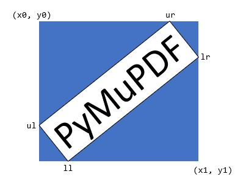

TextPage#
此类表示文档页面上显示的文本和图像。支持所有 MuPDF 文档类型。
创建 TextPage 的常用方法是 DisplayList.get_textpage() 和 Page.get_textpage()。由于该类中的方法数量有限，因此 Page 中有一些更便捷的封装方法可供使用。下表的最后一列展示了这些对应的 Page 方法。
有关此类的详细描述，请参见附录 2。
方法 |
描述 |
页面 get_text 或搜索方法 |
|---|---|---|
提取纯文本 |
“text” |
|
同上 |
“text” |
|
按块分组的纯文本 |
“blocks” |
|
包含 bbox 的所有单词 |
“words” |
|
以 HTML 格式呈现页面内容 |
“html” |
|
以 XHTML 格式呈现页面内容 |
“xhtml” |
|
以 XML 格式呈现页面文本 |
“xml” |
|
以 dict 格式呈现页面内容 |
“dict” |
|
以 JSON 格式呈现页面内容 |
“json” |
|
以 dict 格式呈现页面内容 |
“rawdict” |
|
以 JSON 格式呈现页面内容 |
“rawjson” |
|
在页面中搜索字符串 |
类 API
- class TextPage#
- extractText(sort=False)#
- extractTEXT(sort=False)#
返回页面完整文本的字符串。文本是 UTF-8 编码的 Unicode，顺序与文档创建时指定的一致。
- 参数:
sort (bool) – （v1.19.1 新增）按垂直和水平坐标排序输出。在许多情况下，这应足以生成“自然”的阅读顺序。
- 返回类型:
str
- extractBLOCKS()#
以块分组的文本内容，返回一个包含文本行的列表。每个列表项如下所示:
(x0, y0, x1, y1, "块中的行", block_no, block_type)
前四个条目是块的 bbox 坐标，block_type 为 1 表示图像块，0 表示文本块。block_no 为块的序列号。多个文本行通过换行符连接。
对于图像块，包含其 bbox 和带有一些图像元信息的文本行 — 不包含图像内容。
这是一个高速方法，提供足够的信息来按所需的阅读顺序输出纯文本。
- 返回类型:
list
- extractWORDS(delimiters=None)#
在 v1.23.5 中更改：新增
delimiters参数
以单个单词及其 bbox 信息的列表形式呈现页面内容。该列表中的每个项如下所示:
(x0, y0, x1, y1, "word", block_no, line_no, word_no)
- 参数:
delimiters (str) – （v1.23.5 新增）将这些字符作为 附加 的单词分隔符。默认情况下，所有空格（包括不换行的空格
0xA0）表示单词的开始和结束。现在，您可以指定更多的字符作为分隔符。例如，默认情况下，”john.doe@outlook.com” 会作为 一个 单词返回。如果指定delimiters="@."，则返回 四个 单词：”john”、”doe”、”outlook”、”com”。其他常见的用法包括忽略标点符号字符delimiters=string.punctuation。返回的“word”字符串将不包含任何分隔符字符。
这是一个高速方法，可以从给定区域提取文本或恢复文本的阅读顺序。
- 返回类型:
list
- extractHTML()#
以 HTML 格式呈现页面内容的字符串。该版本包含完整的格式和定位信息。图像也被包括在内（以 base64 字符串编码）。您需要一个 HTML 包来解析 Python 中的输出，您的浏览器应能够适当显示这些信息，但请参见 控制 HTML 输出的质量。
- 返回类型:
str
- extractDICT(sort=False)#
以 Python 字典格式呈现页面内容。提供与 HTML 相同的信息细节。请参阅下面的结构。
- 参数:
sort (bool) – （v1.19.1 新增）按垂直和水平坐标排序输出。在许多情况下，这应足以生成“自然”的阅读顺序。
- 返回类型:
dict
- extractJSON(sort=False)#
以 JSON 字符串格式呈现页面内容。通过
json.dumps(TextPage.extractDICT())创建。该方法用于向后兼容，您可能仅会使用此方法将结果输出到某个文件。该方法检测二进制图像数据并将其转换为 base64 编码的字符串。- 参数:
sort (bool) – （v1.19.1 新增）按垂直和水平坐标排序输出。在许多情况下，这应足以生成“自然”的阅读顺序。
- 返回类型:
str
- extractXHTML()#
以 XHTML 格式呈现页面内容的字符串。文本信息的细节与
extractTEXT()相当，但还包括图像（以 base64 编码）。此方法不尝试重建原始视觉外观。- 返回类型:
str
- extractXML()#
以 XML 格式呈现页面内容的字符串。此格式包含每个字符的完整格式信息：字体、大小、行、段落、位置、颜色等。此格式不包含图像。您需要一个 XML 包来解析 Python 中的输出。
- 返回类型:
str
- extractRAWDICT(sort=False)#
以 Python 字典格式呈现页面内容 — 技术上类似于
extractDICT()，它包含该信息的子集（包括任何图像）。它提供更多细节，直到每个字符，许多情况下使得 XML 无需使用。请参阅下面的结构。- 参数:
sort (bool) – （v1.19.1 新增）按垂直和水平坐标排序输出。在许多情况下，这应足以生成“自然”的阅读顺序。
- 返回类型:
dict
- extractRAWJSON(sort=False)#
以 JSON 字符串格式呈现页面内容。通过
json.dumps(TextPage.extractRAWDICT())创建。您可能仅会使用此方法将结果输出到某个文件。该方法检测二进制图像数据并将其转换为 base64 编码的字符串。- 参数:
sort (bool) – （v1.19.1 新增）按垂直和水平坐标排序输出。在许多情况下，这应足以生成“自然”的阅读顺序。
- 返回类型:
str
- search(needle, quads=False)#
在 v1.18.2 中更改
搜索 字符串 并返回找到的位置列表。
- 参数:
needle (str) – 要搜索的字符串。如果搜索字符串仅包含 ASCII 字母，则大小写都会匹配 — 目前还不支持像 “Ä” 和 “ä” 这样的字符。
quads (bool) – 返回四边形而不是矩形。
- 返回类型:
list
- 返回:
一个包含 Rect 或 Quad 对象的列表，每个对象包围一个找到的 needle 出现位置。由于搜索字符串可能包含空格，它的部分可能会跨越多行，因此可能返回多个矩形（或四边形）。（在 v1.18.2 中更改） 该方法 现在支持断字，例如它会找到 “method”，即使它被分成两个部分 “meth-” 和 “od” 跨越两行。返回的两个矩形将分别包含 “meth”（无连字符）和 “od”。
备注
v1.18.2 中的更改概览：
已删除
hit_max参数：现在始终返回所有匹配项。TextPage 的 Rect 参数现在被尊重：只有该区域内的文本才会被检查。仅考虑完全包含在 bbox 中的字符。相应地，封装方法
Page.search_for()支持 clip 参数。断字 现在可以被识别。
同一行中的重叠矩形 现在会自动合并。我们假设这些分隔是由多个标记的内容组产生的，其中包含同一搜索词的部分。
示例四边形与矩形：搜索字符串 “pymupdf”，返回的条目可能是蓝色矩形，或者如果指定了 quads，则返回四边形 Quad(ul, ur, ll, lr)。

- rect#
与文本页面关联的矩形。它等于创建页面的矩形，或者是
Page.get_textpage()和文本提取/搜索方法中的clip参数。备注
文本搜索和大多数文本提取的输出 限制在此矩形内。但是，(X)HTML 和 XML 输出始终会提取整个页面。
This class represents text and images shown on a document page. All MuPDF document types are supported.
The usual ways to create a textpage are DisplayList.get_textpage() and Page.get_textpage(). Because there is a limited set of methods in this class, there exist wrappers in Page which are handier to use. The last column of this table shows these corresponding Page methods.
For a description of what this class is all about, see Appendix 2.
Method |
Description |
page get_text or search method |
|---|---|---|
extract plain text |
“text” |
|
synonym of previous |
“text” |
|
plain text grouped in blocks |
“blocks” |
|
all words with their bbox |
“words” |
|
page content in HTML format |
“html” |
|
page content in XHTML format |
“xhtml” |
|
page text in XML format |
“xml” |
|
page content in dict format |
“dict” |
|
page content in JSON format |
“json” |
|
page content in dict format |
“rawdict” |
|
page content in JSON format |
“rawjson” |
|
Search for a string in the page |
Class API
字典输出的结构#
Structure of Dictionary Outputs
TextPage.extractDICT()、TextPage.extractJSON()、TextPage.extractRAWDICT() 和 TextPage.extractRAWJSON() 方法返回字典，其中包含页面的文本和图像内容。这四种方法的字典结构几乎相同。它们尽可能精确地映射文本页面的信息层次结构，包括块（blocks）、行（lines）、跨度（spans）和字符（characters），并为每个层级提供相应的子字典：
页面 由 块字典 组成的列表构成。
文本块（text block） 由 行字典 组成的列表构成。
行（line） 由 跨度字典（span dictionaries） 组成的列表构成。
跨度（span） 直接包含文本内容，或者在 RAW 变体中，包含 字符字典（character dictionaries） 的列表。
在 RAW 变体中，一个 字符（character） 是一个包含其起点、边界框（bbox）和 Unicode 值的字典。
在这些字典中，所有 PyMuPDF 的几何对象（点、矩形、矩阵）均采用 “like” 格式表示：例如，使用 rect_like 元组 代替 Rect 对象。这么做的原因是出于性能和内存的考虑：
这些代码是用 C 语言编写的，而 Python 元组可以很容易地在 C 代码中生成。然而，几何对象是在 Python 源代码中定义的，因此需要将每个 Python 元组转换为相应的几何对象，这会显著增加执行时间。
一个 4 元组需要大约 168 字节，而相应的 Rect 需要 472 字节，几乎是前者的三倍。对于一个文本密集型页面，”dict” 字典通常包含 300+ 个 bbox 对象，使用 4 元组存储大约需要 50 KB，而使用 Rect 对象存储则需要 140 KB。对于 “rawdict” 输出，页面可能包含 4 到 5 千个 bbox，因此，存储需求约为 750 KB（4 元组）对比 2 MB（Rect）。
请注意，返回的仅仅是 bboxes （即 rect_like 形式的 4 元组），而实际上 TextPage 还包含完整的位置信息，即 Quad 格式。选择返回 rect_like 的原因仍然是内存考虑：一个 quad_like 需要 488 字节（是 rect_like 的 3 倍）。考虑到页面生成的 bbox 数量，如果返回 quad_like 信息，存储需求将显著增加。
在绝大多数情况下，我们只需处理 水平文本，在这种情况下，bboxes 提供的信息已经足够。
此外，完整的四边形（quad）信息并未丢失，如果需要，可以使用以下函数恢复：
recover_quad()—— 恢复整个跨度的四边形recover_span_quad()—— 恢复跨度中部分字符的四边形recover_line_quad()—— 恢复行的四边形recover_char_quad()—— 恢复字符的四边形
如前所述，只有当文本 非水平 （即 line["dir"] != (1, 0)）且需要用于文本标记注释（例如 Page.add_highlight_annot() 及相关方法）时，才需要使用这些函数来恢复四边形信息。
Methods TextPage.extractDICT(), TextPage.extractJSON(), TextPage.extractRAWDICT(), and TextPage.extractRAWJSON() return dictionaries, containing the page’s text and image content. The dictionary structures of all four methods are almost equal. They strive to map the text page’s information hierarchy of blocks, lines, spans and characters as precisely as possible, by representing each of these by its own sub-dictionary:
A page consists of a list of block dictionaries.
A (text) block consists of a list of line dictionaries.
A line consists of a list of span dictionaries.
A span either consists of the text itself or, for the RAW variants, a list of character dictionaries.
RAW variants: a character is a dictionary of its origin, bbox and unicode.
All PyMuPDF geometry objects herein (points, rectangles, matrices) are represented by there “like” formats: a rect_like tuple is used instead of a Rect, etc. The reasons for this are performance and memory considerations:
This code is written in C, where Python tuples can easily be generated. The geometry objects on the other hand are defined in Python source only. A conversion of each Python tuple into its corresponding geometry object would add significant – and largely unnecessary – execution time.
A 4-tuple needs about 168 bytes, the corresponding Rect 472 bytes - almost three times the size. A “dict” dictionary for a text-heavy page contains 300+ bbox objects – which thus require about 50 KB storage as 4-tuples versus 140 KB as Rect objects. A “rawdict” output for such a page will however contain 4 to 5 thousand bboxes, so in this case we talk about 750 KB versus 2 MB.
Please also note, that only bboxes (= rect_like 4-tuples) are returned, whereas a TextPage actually has the full position information – in Quad format. The reason for this decision is again a memory consideration: a quad_like needs 488 bytes (3 times the size of a rect_like). Given the mentioned amounts of generated bboxes, returning quad_like information would have a significant impact.
In the vast majority of cases, we are dealing with horizontal text only, where bboxes provide entirely sufficient information.
In addition, the full quad information is not lost: it can be recovered as needed for lines, spans, and characters by using the appropriate function from the following list:
recover_quad()– the quad of a complete spanrecover_span_quad()– the quad of a character subset of a spanrecover_line_quad()– the quad of a linerecover_char_quad()– the quad of a character
As mentioned, using these functions is ever only needed, if the text is not written horizontally – line["dir"] != (1, 0) – and you need the quad for text marker annotations (Page.add_highlight_annot() and friends).
Page 字典#
Page Dictionary
键 |
值 |
|---|---|
width |
|
height |
|
blocks |
list，包含块字典（block dictionaries） |
Key |
Value |
|---|---|
width |
width of the |
height |
height of the |
blocks |
list of block dictionaries |
Block 字典#
块字典（Block dictionaries）有两种不同格式，分别用于 图像块（image blocks） 和 文本块（text blocks）。
图像块（Image Block）：
键 |
值 |
|---|---|
type |
1 = 图像（ |
bbox |
图像在页面上的边界框（ |
number |
块计数（ |
ext |
图像类型（ |
width |
原始图像宽度（ |
height |
原始图像高度（ |
colorspace |
颜色空间分量数（ |
xres |
x 方向分辨率（ |
yres |
y 方向分辨率（ |
bpc |
每个颜色分量的位数（ |
transform |
将图像矩形变换到 bbox 的矩阵（ |
size |
图像大小（字节数）（ |
image |
图像内容（ |
mask |
透明图像的掩码内容（ |
“ext” 键的可能取值包括：”bmp”、”gif”、”jpeg”、”jpx”（JPEG 2000）、”jxr”（JPEG XR）、”png”、”pnm” 和 “tiff”。
备注
页面上的 每个 图像实例都会生成一个图像块。因此，如果某个图像在多个位置显示，可能会出现重复。
TextPage 及其相关方法
Page.get_text()适用于所有文档类型。仅对于 PDF 文档，方法Document.get_page_images()/Page.get_images()在图像列表方面有一定重叠功能。但两者的列表 可能相同，也可能不同，差异可能由以下因素导致：PDF 页面中的 “内嵌” 图像（见 Adobe PDF 参考 第 214 页）会包含在 textpage 中，但 不会出现在
Page.get_images()中。注释（Annotations）可能也包含图像，但这些图像 不会出现在
Page.get_images()中。textpage 生成的图像块包含 每个 图像位置，无论是否有重复。这与
Page.get_images()不同，后者每个图像仅列出一次（按引用名称）。如果某个图像在页面的
object定义中被提及，它 一定 会出现在Page.get_images()结果中 [3]。但如果页面的contents没有显示该图像的命令（可能是错误或有意为之），那么该图像 不会出现在 textpage 中。
图像的 “变换矩阵”（transformation matrix）定义如下：使得
bbox / transform == pymupdf.Rect(0, 0, 1, 1)成立，详细信息请参见 图像转换矩阵。透明图像可能带有一个掩码图像（mask），存储在
"mask"键下，以DeviceGrayPNG 图像格式存储。否则，该键的值为None。如果存在，你可以尝试通过创建 Pixmap 对象，并将 “image” 和 “mask” 叠加，来恢复（接近）原始的透明图像。但请注意，并非所有掩码图像都符合叠加 Pixmap 的条件，因此该方法不一定总是有效。示例如下：
>>> base = pymupdf.Pixmap(block["image"])
>>> mask = pymupdf.Pixmap(block["mask"])
>>> result = pymupdf.Pixmap(base, mask)
文本块（Text Block）：
键 |
值 |
|---|---|
type |
0 = 文本（ |
bbox |
块的矩形区域（ |
number |
块计数（ |
lines |
文本行字典的 list |
Block dictionaries come in two different formats for image blocks and for text blocks.
Image block:
Key |
Value |
|---|---|
type |
1 = image ( |
bbox |
image bbox on page ( |
number |
block count ( |
ext |
image type ( |
width |
original image width ( |
height |
original image height ( |
colorspace |
colorspace component count ( |
xres |
resolution in x-direction ( |
yres |
resolution in y-direction ( |
bpc |
bits per component ( |
transform |
matrix transforming image rect to bbox ( |
size |
size of the image in bytes ( |
image |
image content ( |
mask |
image mask content ( |
Possible values of the “ext” key are “bmp”, “gif”, “jpeg”, “jpx” (JPEG 2000), “jxr” (JPEG XR), “png”, “pnm”, and “tiff”.
备注
An image block is generated for all and every image occurrence on the page. Hence there may be duplicates, if an image is shown at different locations.
TextPage and corresponding method
Page.get_text()are available for all document types. Only for PDF documents, methodsDocument.get_page_images()/Page.get_images()offer some overlapping functionality as far as image lists are concerned. But both lists may or may not contain the same items. Any differences are most probably caused by one of the following:“Inline” images (see page 214 of the Adobe PDF 参考) of a PDF page are contained in a textpage, but do not appear in
Page.get_images().Annotations may also contain images – these will not appear in
Page.get_images().Image blocks in a textpage are generated for every image location – whether or not there are any duplicates. This is in contrast to
Page.get_images(), which will list each image only once (per reference name).Images mentioned in the page’s
objectdefinition will always appear inPage.get_images()[1]. But it may happen, that there is no “display” command in the page’scontents(erroneously or on purpose). In this case the image will not appear in the textpage.
The image’s “transformation matrix” is defined as the matrix, for which the expression
bbox / transform == pymupdf.Rect(0, 0, 1, 1)is true, lookup details here: 图像转换矩阵.A transparent image may be accompanied by a mask image. This is stored under key
"mask"and has the format of aDeviceGrayPNG image. Otherwise the value of this key isNone. If present, you may be able to recover (an equivalent of) the original image – i.e. with transparency – by creating Pixmap objects from the “image”, respectively “mask” values and overlay them. This is not guaranteed to always work because mask images come in multiple formats, of which not all qualify for the conditions under which overlaying Pixmaps are supported. Here is a code snippet:
>>> base = pymupdf.Pixmap(block["image"])
>>> mask = pymupdf.Pixmap(block["mask"])
>>> result = pymupdf.Pixmap(base, mask)
Text block:
Key |
Value |
|---|---|
type |
0 = text (int) |
bbox |
block rectangle, |
number |
block count (int) |
lines |
list of text line dictionaries |
Line 字典#
Line Dictionary
键 |
值 |
|---|---|
bbox |
行的矩形区域， |
wmode |
书写模式 (int)：0 = 水平，1 = 垂直 |
dir |
书写方向， |
spans |
span 字典的 list |
键 “dir” 的值是文本相对于 x 轴的 单位向量 dir = (cosine, -sine) [4] 。
请参见下图：每个象限中的单词（按逆时针方向，从右上到右下）分别旋转了 30、120、210 和 300 度。
Key |
Value |
|---|---|
bbox |
line rectangle, |
wmode |
writing mode (int): 0 = horizontal, 1 = vertical |
dir |
writing direction, |
spans |
list of span dictionaries |
The value of key “dir” is the unit vector dir = (cosine, -sine) of the angle, which the text has relative to the x-axis [2]. See the following picture: The word in each quadrant (counter-clockwise from top-right to bottom-right) is rotated by 30, 120, 210 and 300 degrees respectively.

Span 字典#
Spans 包含实际的文本。仅当一行中的文本具有不同的字体属性时，该行才会包含 多个 span。
在 1.14.17 版本中更改：Spans 现在再次包含 bbox 键。
在 1.17.6 版本中更改：Spans 现在包含 origin 键。
键 |
值 |
|---|---|
bbox |
span 的矩形区域， |
origin |
第一个字符的起点， |
font |
字体名称 (str) |
ascender |
字体的上伸部 (float) |
descender |
字体的下伸部 (float) |
size |
字号 (float) |
flags |
字体特征 (int) |
char_flags |
字符特征 (int) |
color |
以 sRGB 格式表示的文本颜色 0xRRGGBB (int) |
alpha |
文字的不透明度 0..255 (int) |
text |
（仅用于 |
chars |
（仅用于 |
Show/hide history
(新功能于 1.25.3.0 版本)： 添加了 “alpha” 项目。
(新功能于 1.16.0 版本)： “color” 现在是以 sRGB 格式（int）编码的文本颜色，例如 0xFF0000 代表红色。
可使用 sRGB_to_pdf() 将此整数转换为 PDF 格式（r, g, b），值为 0 到 1 的浮点数；
也可以使用 sRGB_to_rgb() 转换为整数 (R, G, B)，值范围 0 到 255。
(新功能于 v1.18.5 版本)： “ascender” 和 “descender” 代表字体属性，按 fontsize 1 相对提供。
请注意，descender 为负值。下图展示了它们与其他值及属性的关系。

这些数值可用于计算字符（或 span）的最小高度，而标准的 “bbox” 值实际上表示的是 行高。 以下代码重新计算 span 的 bbox 以使其高度恰好等于 fontsize，确保文本完全适配：
>>> a = span["ascender"]
>>> d = span["descender"]
>>> r = pymupdf.Rect(span["bbox"])
>>> o = pymupdf.Point(span["origin"]) # y 值即为基线
>>> r.y1 = o.y - span["size"] * d / (a - d)
>>> r.y0 = r.y1 - span["size"]
>>> # 现在 r 代表一个高度等于 'fontsize' 的矩形
小心
上述计算可能会产生 更大的 高度！例如，在 OCR 处理的文档中，由于可能存在各种文本伪影，这种情况风险较高。
MuPDF 会尝试提供合理的 bbox 高度，而不完全依赖于 PDF 中的 fontsize 值。
因此，请确保 span["bbox"] 的高度 大于 span["size"]。
备注
你可以让 PyMuPDF 自动完成上述操作，执行 pymupdf.TOOLS.set_small_glyph_heights(True)。
这会设置一个全局参数，使后续所有文本搜索和提取基于较小的字形高度（如果有意义）。
下图展示了原始 span 矩形（红色）与重新计算高度后的矩形（蓝色）。

“flags” 是一个整数，表示字体属性（除了第 0 位），其各位的含义如下：
bit 0: 上标（
TEXT_FONT_SUPERSCRIPT）—— 不是字体属性，而是 MuPDF 代码检测到的。bit 1: 斜体（
TEXT_FONT_ITALIC）bit 2: 衬线（
TEXT_FONT_SERIFED）bit 3: 等宽（
TEXT_FONT_MONOSPACED）bit 4: 加粗（
TEXT_FONT_BOLD）
可通过以下方式测试这些特性：
>>> if flags & pymupdf.TEXT_FONT_BOLD & pymupdf.TEXT_FONT_ITALIC:
print(f"{span['text']=} 是加粗且斜体")
位 1 到 4 是字体的固有属性，即它们编码在字体程序中。 但请注意，该信息并不一定是正确或完整的——许多字体文件在这些字段中可能包含错误数据。
“char_flags” 是一个整数，表示额外的字符属性：
bit 0: 删除线。
bit 1: 下划线。
bit 2: 伪造（始终为 0，见字符字典）。
bit 3: 填充。
bit 4: 勾边（stroked）。
bit 5: 裁剪。
例如，如果文本既 未填充 又 未勾边 （if not (char_flags & 2**3 & 2**4): ...），
那么该文本将不可见。
(char_flags 在 v1.25.2 版本中新增。)
Spans contain the actual text. A line contains more than one span only, if it contains text with different font properties.
Changed in version 1.14.17 Spans now also have a bbox key (again).
Changed in version 1.17.6 Spans now also have an origin key.
Key |
Value |
|---|---|
bbox |
span rectangle, |
origin |
the first character’s origin, |
font |
font name (str) |
ascender |
ascender of the font (float) |
descender |
descender of the font (float) |
size |
font size (float) |
flags |
font characteristics (int) |
char_flags |
char characteristics (int) |
color |
text color in sRGB format 0xRRGGBB (int). |
alpha |
text opacity 0..255 (int). |
text |
(only for |
chars |
(only for |
Show/hide history
(New in version 1.25.3.0): Added “alpha” item.
(New in version 1.16.0): “color” is the text color encoded in sRGB (int) format, e.g. 0xFF0000 for red. There are functions for converting this integer back to formats (r, g, b) (PDF with float values from 0 to 1) sRGB_to_pdf(), or (R, G, B), sRGB_to_rgb() (with integer values from 0 to 255).
(New in v1.18.5): “ascender” and “descender” are font properties, provided relative to fontsize 1. Note that descender is a negative value. The following picture shows the relationship to other values and properties.
These numbers may be used to compute the minimum height of a character (or span) – as opposed to the standard height provided in the “bbox” values (which actually represents the line height). The following code recalculates the span bbox to have a height of fontsize exactly fitting the text inside:
>>> a = span["ascender"]
>>> d = span["descender"]
>>> r = pymupdf.Rect(span["bbox"])
>>> o = pymupdf.Point(span["origin"]) # its y-value is the baseline
>>> r.y1 = o.y - span["size"] * d / (a - d)
>>> r.y0 = r.y1 - span["size"]
>>> # r now is a rectangle of height 'fontsize'
小心
The above calculation may deliver a larger height! This may e.g. happen for OCRed documents, where the risk of all sorts of text artifacts is high. MuPDF tries to come up with a reasonable bbox height, independently from the fontsize found in the PDF. So please ensure that the height of span["bbox"] is larger than span["size"].
备注
You may request PyMuPDF to do all of the above automatically by executing pymupdf.TOOLS.set_small_glyph_heights(True). This sets a global parameter so that all subsequent text searches and text extractions are based on reduced glyph heights, where meaningful.
The following shows the original span rectangle in red and the rectangle with re-computed height in blue.
“flags” is an integer, which represents font properties except for the first bit 0. They are to be interpreted like this:
bit 0: superscripted (
TEXT_FONT_SUPERSCRIPT) – not a font property, detected by MuPDF code.bit 1: italic (
TEXT_FONT_ITALIC)bit 2: serifed (
TEXT_FONT_SERIFED)bit 3: monospaced (
TEXT_FONT_MONOSPACED)bit 4: bold (
TEXT_FONT_BOLD)
Test these characteristics like so:
>>> if flags & pymupdf.TEXT_FONT_BOLD & pymupdf.TEXT_FONT_ITALIC:
print(f"{span['text']=} is bold and italic")
Bits 1 thru 4 are font properties, i.e. encoded in the font program. Please note, that this information is not necessarily correct or complete: fonts quite often contain wrong data here.
“char_flags” is an integer, which represents extra character properties:
bit 0: strikeout.
bit 1: underline.
bit 2: synthetic (always 0, see char dictionary).
bit 3: filled.
bit 4: stroked.
bit 5: clipped.
For example if not filled and not stroked (if not (char_flags & 2**3 & 2**4):
...) then the text will be invisible.
(char_flags is new in v1.25.2.)
extractRAWDICT() 的字符字典#
Character Dictionary for extractRAWDICT()
键 |
值 |
|---|---|
origin |
字符的左基线点， |
bbox |
字符矩形区域， |
synthetic |
布尔值。 |
c |
字符（Unicode） |
(synthetic 在 v1.25.3 中新增。)
Key |
Value |
|---|---|
origin |
character’s left baseline point, |
bbox |
character rectangle, |
synthetic |
bool. |
c |
the character (unicode) |
(synthetic is new in v1.25.3.)
This image shows the relationship between a character’s bbox and its quad: 
Footnotes